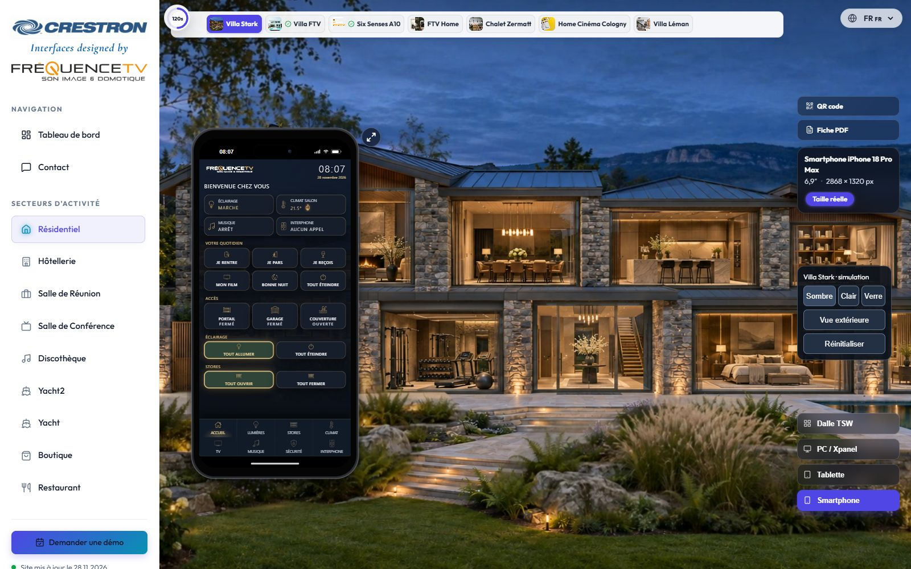
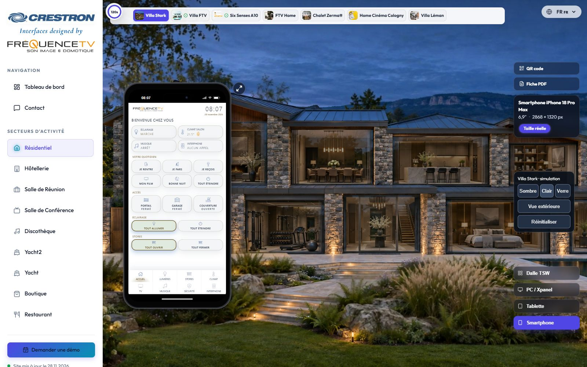
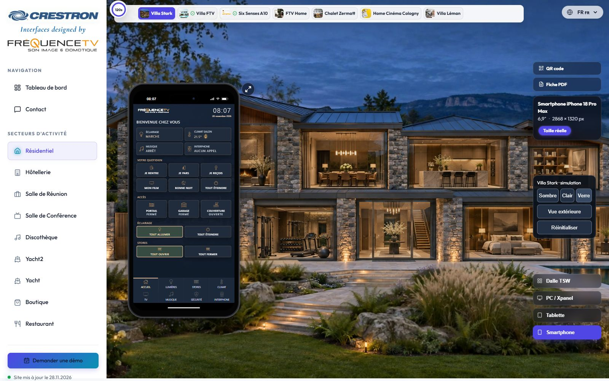
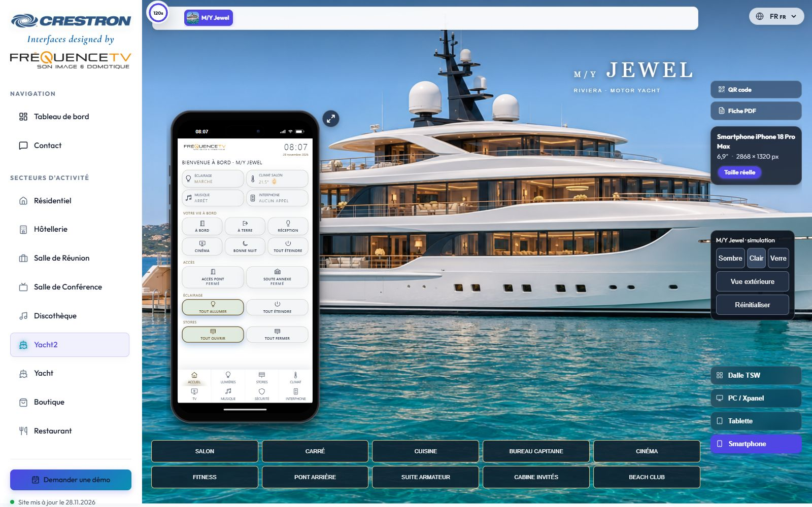
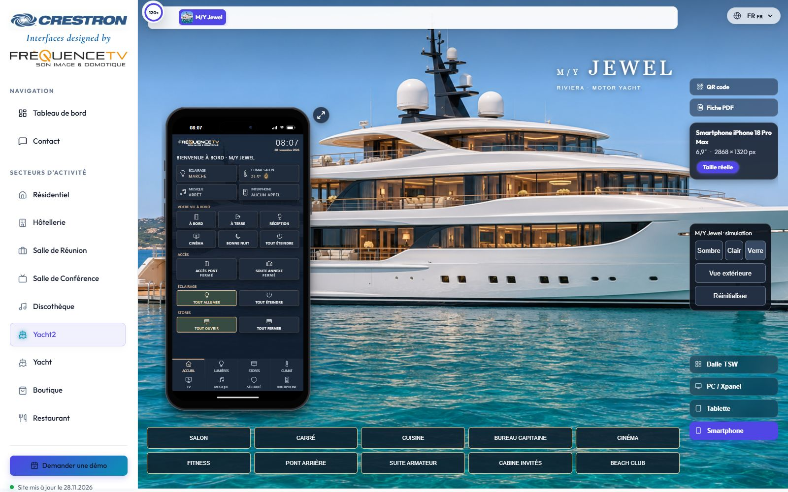

Frequence TV · M/Y Jewel
GUI de Villa Stark · nouvel univers Riviera · 28 novembre 2026
Référence — Villa Stark

Sombre
Clair élégant
Verre dépoliNouveau projet — M/Y Jewel
Sombre
Clair élégant
Verre dépoli